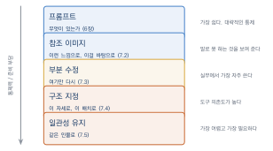
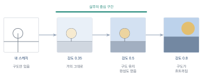
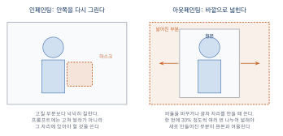
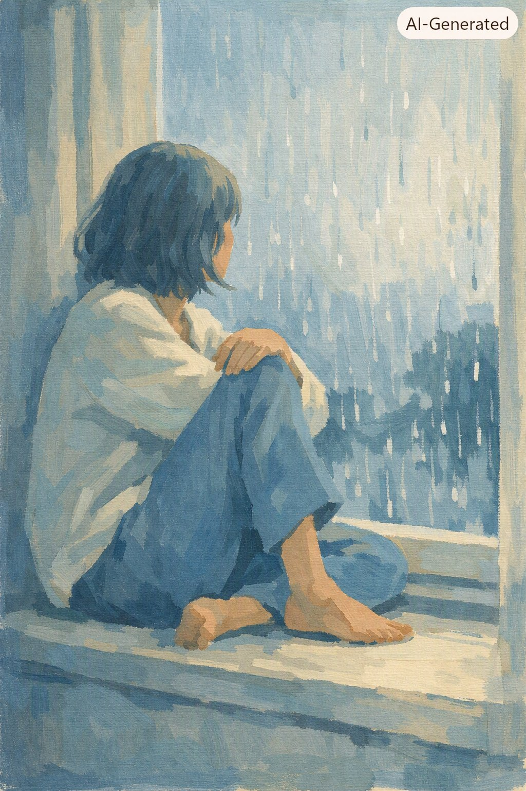

이미지 제어와 편집
이 장을 마치면
- 원하는 결과를 얻기 위해 참조 이미지를 활용할 수 있다.
- 이미지의 일부만 지정해 고쳐 그릴 수 있다.
- 포즈·구조·깊이를 지정해 구도를 통제할 수 있다.
- 같은 캐릭터를 여러 장면에 일관되게 등장시킬 수 있다.
- 생성 결과를 편집 도구로 마무리할 수 있다.
6장에서 좋은 결과가 나올 때까지 여러 번 뽑는 법을 익혔다면, 이 장에서는 원하는 것을 지정해서 얻는 법을 배운다. 이 차이는 취미와 실무를 가르는 지점이다. 의뢰받은 작업에서는 ’이 인물이 이 포즈로 이 배경에’ 있어야 하지, 그럴듯한 무언가가 나오면 되는 것이 아니기 때문이다.
7.1 왜 제어가 필요한가
1장 실습 1-4를 떠올려 보자. 같은 프롬프트로 네 장을 만들어 공통으로 나타난 것과 매번 달라진 것을 나누어 적었다. 그때 오른쪽 칸에 적은 것들이 바로 프롬프트로 통제되지 않는 부분이다.
프롬프트가 닿지 않는 곳
프롬프트는 무엇이 있는가를 정하는 데는 강하지만, 어디에 어떻게 있는가에는 약하다. 6.6절에서 본 실패들도 대부분 여기서 나온다.
| 프롬프트로 잘 되는 것 | 프롬프트로 잘 안 되는 것 |
|---|---|
| 무엇이 등장하는가 | 화면의 정확히 어느 위치에 |
| 전체 분위기와 화풍 | 인물의 구체적인 포즈 |
| 대략적인 구도와 조명 | 두 장의 인물이 같은 사람인가 |
| 색의 경향 | 정확한 색상 코드 |
| 매체와 질감 | 이미 만든 그림의 일부만 수정 |
표 7.1의 오른쪽 열은 실무에서 반드시 요구되는 것들이다. 취미로 그럴듯한 그림을 만드는 데는 왼쪽만으로 충분하지만, 의뢰를 받아 정해진 사양을 맞추려면 오른쪽이 필요하다.
6장까지가 여러 번 뽑아 고르기였다면, 7장은 원하는 것을 지정해서 얻기다. 이 차이가 취미와 실무를 가른다. 그리고 9장의 웹툰 프로젝트는 오른쪽 열 없이는 시작할 수 없다.
제어 기법의 지도
프롬프트 바깥의 통제 수단은 크게 넷이다. 아래로 갈수록 통제력이 커지고 준비가 많이 든다.

그림 7.1의 각 층이 이 장의 절에 대응한다.
참조 이미지(7.2절)는 이런 느낌으로 또는 이 그림을 바탕으로를 전달한다. 가장 쉽고 무료 도구에서도 대체로 쓸 수 있다.
부분 수정(7.3절)은 이미 만든 이미지의 일부만 다시 그린다. 실무에서 가장 자주 쓰는 기능이다.
구조 지정(7.4절)은 포즈나 윤곽을 정확히 지정한다. 통제력이 크지만 준비물과 도구가 필요하다.
일관성 유지(7.5절)는 같은 인물·사물을 여러 장면에 반복 등장시킨다. 가장 어렵고, 가장 필요하다.
무엇부터 손댈지 정하기
작업이 막혔을 때 어느 기법으로 갈지 판단하는 기준이다.
- 전체는 좋은데 일부가 이상하다 → 부분 수정(7.3절)
- 느낌이 안 잡힌다 → 참조 이미지(7.2절)
- 배치와 포즈가 정해져 있다 → 구조 지정(7.4절)
- 여러 장에 같은 인물이 나와야 한다 → 일관성 유지(7.5절)
- 글자·로고·정확한 색이 필요하다 → 편집 도구(7.6절)
마지막 항목을 잊지 말자. 6.6절에서 말했듯 생성으로 해결하려는 고집이 가장 큰 시간 낭비인 경우가 많다. 제어 기법을 배우는 목적 중 하나는 언제 생성을 그만두고 손으로 할지 아는 것이다.
무료로 어디까지
솔직하게 정리해 둔다. 이 장의 기법들은 도구에 따라 접근성이 크게 다르다.
- 참조 이미지: 무료 도구에서도 상당수 지원한다
- 부분 수정: 지원하는 무료 도구가 있으나 정밀도는 제한적이다
- 구조 지정: 무료 범위에서 제한적으로 가능하다. 전문 도구는 유료다
- 일관성 유지: 기본적인 방법은 무료로 가능하고, 전용 기능은 대개 유료다
각 절에서 무료로 되는 방법을 먼저 소개하고, 유료 도구는 발전 경로로 언급한다. 수업 과제는 무료 범위 안에서 완주할 수 있도록 설계했다.
7.2 이미지를 참조로 주기
말로 설명하기 어려운 것을 보여 주는 방법이다. 3.3절에서 본 멀티모달의 가장 실용적인 쓰임이며, 그림을 그릴 줄 아는 사람에게 가장 강력한 무기이기도 하다.
원리: 중간에서 출발한다
3.2절에서 확산 모델이 순수한 잡음에서 시작해 단계적으로 걷어낸다고 했다. 참조 이미지를 주는 방식(이미지 투 이미지image-to-image)은 이 출발점을 바꾼다.
순수한 잡음 대신, 참조 이미지에 노이즈를 적당히 섞은 상태에서 시작하는 것이다. 이미 형상의 뼈대가 들어 있으니 결과가 원본의 구조를 따라간다. 노이즈를 얼마나 섞느냐가 곧 원본에서 얼마나 멀어질지를 정한다.

그림 7.2처럼 이 값을 강도strength 또는 denoising strength라고 부른다. 도구에 따라 이름과 방향이 다르니 확인이 필요하다.
| 강도 | 결과 | 쓰임 |
|---|---|---|
| 0.2–0.35 | 원본과 거의 같고 질감만 다듬어짐 | 마감 정리, 노이즈 제거 |
| 0.4–0.55 | 구도와 배치는 유지, 화풍이 바뀜 | 스케치 완성, 화풍 변환 |
| 0.6–0.75 | 큰 배치만 남고 세부는 새로 | 아이디어 변주 |
| 0.8 이상 | 원본의 흔적이 거의 사라짐 | 사실상 새로 생성 |
표 7.2에서 0.4–0.55 구간이 실무의 중심이다. 여기서 자기 스케치의 구도를 유지하면서 완성도를 얻는다. 처음에는 0.5로 시작해 결과를 보고 조절하는 것을 권한다.
내 스케치를 완성시키기
이 절에서 가장 중요한 작업 방식이다. 순서는 이렇다.
- 원하는 구도를 종이나 태블릿에 대충 그린다. 잘 그릴 필요 없다.
- 사진으로 찍거나 파일로 저장한다.
- 참조 이미지로 올리고, 완성된 그림을 묘사하는 프롬프트를 쓴다.
- 강도 0.5 부근에서 생성한다.
- 구도가 흐트러졌으면 강도를 낮추고, 너무 스케치 같으면 올린다.
a young woman sitting sideways on a windowsill,
one knee pulled up, looking out at the rain,
gouache illustration, muted blue and cream palette,
soft diffused light from the window,
visible brush texture, simplified background
프롬프트가 스케치를 완성해 줘가 아니라 완성된 그림의 묘사라는 점에 주목하자. 4.1절의 원칙이 여기서도 그대로 적용된다.
스케치를 그릴 자신이 없다면 대안이 있다. 도형만 배치해도 된다. 사각형 하나를 인물 자리에, 가로선 하나를 지평선 자리에 두는 것만으로도 배치가 전달된다. 사진을 찍어 참조로 주는 방법도 있다. 원하는 포즈를 직접 취해 찍은 사진이 가장 정확한 참조가 된다.
스타일 참조와 내용 참조
최근 도구들은 참조를 두 갈래로 나누어 받는다. 이 구분을 알아야 원하는 결과가 나온다.
내용 참조는 무엇이 어디에 있는가를 가져온다. 구도, 배치, 포즈가 유지된다. 방금 본 스케치 완성이 여기에 해당한다.
스타일 참조는 어떤 느낌인가만 가져온다. 색감, 질감, 붓질이 옮겨 오고 내용은 프롬프트를 따른다. 6.3절에서 말로 설명하기 어려웠던 화풍을 여기서 해결한다.
2.2절에서 앞쪽 층은 질감, 뒤쪽 층은 내용이라고 한 것이 이 구분의 근거다. 두 참조를 동시에 받는 도구라면, 구도는 자기 스케치에서 스타일은 다른 이미지에서 가져오는 조합이 가능하다.
스타일 참조로 남의 작품을 쓰는 것은 5.3절의 논의가 그대로 적용된다. 작가 이름을 프롬프트에 적지 않았을 뿐 사실상 같은 일을 하는 것이다. 자기가 찍은 사진, 자기가 그린 그림, 저작권이 만료된 작품을 참조로 쓰는 습관을 들이자. 결과도 자기 것에 가까워진다.
색을 참조로 쓰기
작지만 유용한 요령이다. 원하는 색 조합이 있다면 색만 칠한 이미지를 만들어 스타일 참조로 준다. 색 다섯 개를 나란히 칠한 그림 한 장이면 충분하다.
프롬프트로 색을 지정하는 것보다 훨씬 정확하다. muted terracotta라고 써도 모델이 어떤 색을 떠올릴지 알 수 없지만, 색 견본을 주면 그 근처로 간다. 학과나 브랜드의 지정 색이 있는 작업에서 특히 쓸모 있다.
색 견본을 스타일 참조로 주면서 프롬프트로는 어디에 그 색을 쓸지만 안내한다. 견본이 색을, 프롬프트가 배치를 맡는 식으로 역할을 나눈다.
a quiet cafe interior seen from a corner table,
follow the color palette of the reference swatch,
warm terracotta walls, cream tabletops, muted teal chairs,
soft even lighting, flat illustration style결과의 전체 색조가 견본의 다섯 색 안으로 수렴한다. \textbf{프롬프트에 색 이름을 함께 적은 것}은 견본과 프롬프트가 서로를 보강하도록 하기 위해서다. 다만 스타일 참조의 강도가 지나치게 높으면 견본의 배치까지 흉내 내 화면이 색 띠처럼 나뉘어 나오기도 한다. 그럴 때는 참조 강도를 한 단계 낮춘다.
참조를 쓸 때의 함정
원본이 그대로 나온다. 강도가 너무 낮으면 참조 이미지가 거의 그대로 나온다. 남의 이미지를 참조로 썼다면 이것은 명백한 문제가 된다. 반드시 결과가 충분히 달라졌는지 확인한다.
구도가 예상과 다르게 유지된다. 참조 이미지의 여백, 잘린 부분, 기울기까지 따라온다. 참조로 줄 이미지는 미리 필요한 비율로 잘라 두는 편이 좋다.
여러 참조가 충돌한다. 내용 참조와 스타일 참조를 동시에 주면서 프롬프트에도 강한 지시를 넣으면 셋이 싸운다. 하나를 주로 삼고 나머지는 약하게 주는 것이 요령이다.
7.3 부분만 고치기
전체는 마음에 드는데 한 군데가 거슬리는 상황. 실무에서 가장 자주 만나는 상황이고, 다시 뽑으면 나머지가 망가진다. 이때 쓰는 것이 부분 수정이다.

그림 7.3의 두 기능이 이 절의 전부다. 방향만 반대이지 원리는 같다. 이미 있는 부분에 어울리게 채워 넣는 일이다.
인페인팅: 안쪽을 다시 그린다
인페인팅inpainting은 이미지의 일부를 지정해 그 부분만 다시 생성하는 기능이다. 지정하는 영역을 마스크mask라고 한다.
작업 순서는 어느 도구에서나 같다.
- 고칠 영역을 붓으로 칠해 마스크를 만든다
- 그 자리에 무엇이 있어야 하는지 프롬프트로 쓴다
- 생성한다. 여러 번 뽑아 고른다
프롬프트를 쓸 때 흔한 실수가 있다. 손을 고쳐 줘라고 쓰면 안 된다. 그 자리에 있어야 할 것을 묘사해야 한다. a natural relaxed hand with five fingers, resting on the table처럼. 4.1절의 원칙이 여기서도 그대로다.
마스크를 그리는 요령
결과의 질은 마스크를 어떻게 그리느냐에 크게 좌우된다.
여유 있게 칠한다. 고칠 부분에 딱 맞춰 칠하면 경계가 어색해진다. 주변을 조금 넉넉히 포함하면 모델이 주변과 어울리게 그린다.
경계를 부드럽게 한다. 도구에 경계 흐림 설정이 있다면 활용한다. 딱딱한 경계는 오려 붙인 것처럼 보인다.
한 번에 한 곳만. 여러 곳을 동시에 칠하면 모델이 그 영역들을 하나로 이해해 이상한 결과가 나온다. 손과 얼굴을 동시에 고치지 말고 따로 한다.
맥락이 필요하면 넓게. 인물의 팔 전체를 자연스럽게 만들려면 어깨부터 손끝까지 포함해야 한다. 손목만 칠하면 팔과 이어지지 않는다.
실무에서 자주 하는 인페인팅
| 상황 | 요령 |
|---|---|
| 손가락이 이상하다 | 손목까지 포함해 칠하고, 손의 자세를 구체적으로 묘사 |
| 배경에 방해 요소가 있다 | 그 자리에 있어야 할 배경을 묘사한다 |
| 표정을 바꾸고 싶다 | 얼굴 전체를 칠한다. 눈만 칠하면 표정이 어긋난다 |
| 소품을 넣거나 뺀다 | 그림자가 남지 않도록 주변까지 넉넉히 |
| 글자를 지운다 | 지운 자리의 재질을 묘사 (plain brick wall) |
| 옷의 색을 바꾼다 | 옷 전체를 칠하고 새 색과 재질을 묘사 |
표 7.3에서 다섯째 줄에 주목하자. 6.6절에서 글자는 편집 도구에서 얹으라고 했는데, 생성된 이미지에 깨진 글자가 이미 들어 있는 경우가 많다. 인페인팅으로 지운 뒤 편집 도구에서 제대로 된 글자를 얹는 것이 표준 절차다.
둘째 줄, 배경에서 방해 요소를 지우는 경우를 예로 들어 보자. 골목을 걷는 인물 뒤에 표지판이 걸려 시선을 흐트러뜨린다고 하자. 표지판과 그 그림자까지 넉넉히 마스크로 칠한 뒤, 그 자리에 있어야 할 것을 적는다. 지워 줘가 아니라 빈 벽을 묘사하는 것이다.
a continuous weathered red brick wall,
same lighting and perspective as the surrounding wall,
no signs, no text, no objects,
soft afternoon shadow consistent with the scene표지판이 사라지고 그 자리를 주변과 같은 벽돌 벽이 메운다. \textbf{같은 조명과 원근}을 명시했기 때문에 이어 붙인 자국이 거의 보이지 않는다. 다만 마스크를 표지판에 딱 맞춰 칠했다면 그림자가 남아 어색해지므로, 결과를 보고 그림자 영역까지 포함해 한 번 더 칠하는 경우가 많다.
반대로 없던 요소를 더해 넣을 때도 같은 원리다. 빈 테이블 위에 소품을 놓는다면, 놓을 자리를 칠하고 그 물체를 묘사하되 주변과 맞는 광원을 함께 지시한다.
a ceramic coffee cup with faint steam,
sitting on the wooden table,
light coming from the left window,
soft shadow falling to the right, matching the scene아웃페인팅: 바깥으로 넓힌다
아웃페인팅outpainting은 이미지의 바깥쪽을 이어 그려 화면을 넓히는 기능이다. 쓸 일이 생각보다 많다.
비율을 바꿀 때. 세로로 만든 이미지를 가로 배너에 써야 한다면, 잘라 내는 대신 좌우로 넓힌다. 6.5절에서 넓은 비율로 만들어 잘라 쓰라고 했지만 이미 만들어 버린 경우의 해법이다.
여백이 필요할 때. 글자를 얹을 자리가 없을 때 위나 아래로 넓힌다.
화면을 넓게 보이고 싶을 때. 인물이 화면에 꽉 차 답답하다면 주변을 넓혀 숨통을 틔운다.
아웃페인팅에도 프롬프트가 필요하다. 새로 채워질 바깥 영역에 무엇이 있어야 하는지를 적는다. 세로 인물 사진을 가로 배너로 넓히는 경우라면 좌우로 이어질 배경을 묘사한다.
extend the scene outward on both sides,
same misty pine forest and overcast sky,
keep the horizon line and color palette continuous,
empty space on the left for text, no new characters인물을 새로 넣지 말라는 지시가 중요하다. 넓힌 자리에 모델이 멋대로 사람이나 사물을 채우는 일이 흔하기 때문이다. 글자 자리를 왼쪽에 비워 두라처럼 비워 둘 곳까지 지정하면 뒤 작업이 편해진다.
아웃페인팅은 한 번에 조금씩 하는 것이 안전하다. 한 번에 두 배로 넓히면 새로 만들어진 부분이 원본과 따로 논다. 30% 정도씩 여러 번 나누어 넓히면 훨씬 자연스럽다.
무료로 하는 방법
전용 인페인팅 기능이 없는 도구를 쓴다면 우회로가 있다.
편집 도구의 생성 채우기. Photopea 같은 편집기에도 주변을 참고해 채우는 기능이 있다. 인공지능만큼 똑똑하지는 않지만 단순한 배경 지우기에는 충분하다.
손으로 덮기. 거슬리는 요소 위에 다른 요소를 얹거나, 그 부분을 잘라 내는 구도로 바꾼다. 가장 확실하고 빠르다.
두 장을 합성한다. 배경이 좋은 장과 인물이 좋은 장을 각각 뽑아 편집 도구에서 합친다. 7.6절에서 다룬다.
부분 수정을 배우고 나면 생성 단계의 기준이 달라진다. 완벽한 한 장을 기다릴 필요가 없어진다. 큰 구도와 분위기만 맞으면 나머지는 고칠 수 있기 때문이다. 이것이 6.2절의 선별 기준을 실질적으로 바꾼다.
7.4 구조를 지정하기
포즈를 정확히 지정하고 싶다. 건물의 원근을 맞추고 싶다. 이 요구는 프롬프트로도 참조 이미지로도 잘 해결되지 않는다. 이때 쓰는 것이 구조 조건이다.
원리: 뼈대만 가져온다
7.2절의 참조 이미지는 색과 질감까지 통째로 가져온다. 반면 구조 지정은 원본에서 뼈대에 해당하는 정보만 추출해 조건으로 준다.
추출하는 정보는 몇 가지 종류가 있다.
| 종류 | 가져오는 것 | 쓰임 |
|---|---|---|
| 포즈 | 관절 위치로 이루어진 뼈대 | 인물의 자세를 정확히 |
| 윤곽선 | 형태의 경계선 | 건물, 제품, 도안 |
| 깊이 | 앞뒤 거리 정보 | 공간의 배치 유지 |
| 낙서 | 손으로 그린 선 | 대략적 배치 지정 |
| 분할 | 영역별 구분(하늘/땅/인물) | 화면 구성 지정 |
표 7.4의 방식들은 흔히 컨트롤넷 계열로 불린다. 원리는 같다. 조건으로 준 뼈대를 지키면서 나머지를 프롬프트대로 채우는 것이다.
참조 이미지가 이 그림처럼이라면 구조 조건은 이 자세로, 이 배치로다. 색도 질감도 인물도 전혀 다르게 하면서 뼈대만 물려받을 수 있다는 점이 결정적이다.
자기 사진의 포즈를 가져오기
가장 실용적인 쓰임이다. 원하는 포즈가 있으면 직접 취해서 찍는다. 그 사진에서 포즈만 추출해 조건으로 준다.
작업 순서는 이렇다.
- 원하는 자세를 취하고 사진을 찍는다. 옷차림·배경·조명은 아무래도 좋다
- 포즈 조건을 지원하는 도구에 그 사진을 올린다
- 조건 종류를 포즈로 선택한다
- 만들고 싶은 인물과 장면을 프롬프트로 쓴다
- 생성한다
a knight in worn leather armor standing on a cliff edge,
wind blowing the cape, overcast sky,
digital painting, muted earth tones, dramatic rim light
프롬프트 어디에도 자세에 대한 언급이 없다는 점에 주목하자. 자세는 조건이 담당하므로 프롬프트는 나머지에만 집중하면 된다. 이렇게 역할을 나누면 둘 다 정확해진다.
낙서로 배치 지정하기
그림 실력이 필요 없는 방법이다. 종이에 도형과 선만 그려 배치를 지정한다.
큰 사각형 하나 → 건물
그 앞의 타원 하나 → 인물
가로선 하나 → 지평선
위쪽의 둥근 도형들 → 구름이렇게 그린 낙서를 조건으로 주고 프롬프트로 내용을 설명하면, 배치는 낙서를 따르고 세부는 프롬프트를 따른다. 9장 웹툰 작업에서 컷마다 인물의 위치를 정할 때 유용하다.
윤곽선과 깊이
윤곽선은 형태를 정확히 지켜야 할 때 쓴다. 로고나 제품의 실루엣을 유지하면서 재질만 바꾸는 작업, 건축 도면을 바탕으로 조감도를 만드는 작업이 여기에 해당한다.
깊이는 공간의 앞뒤 관계를 유지한다. 같은 방의 구조를 유지하면서 인테리어만 바꾸거나, 같은 풍경의 계절을 바꾸는 작업에 쓴다.
무료로 어디까지
이 기법은 도구 접근성 차이가 가장 큰 영역이다.
무료로 되는 것. 일부 무료 서비스가 포즈·윤곽 조건을 제한적으로 제공한다. Leonardo.ai의 무료 범위에서 구조 지정을 시험해 볼 수 있고, Krea는 실시간 스케치 방식으로 낙서 조건과 비슷한 효과를 낸다. 정밀도는 떨어지지만 원리를 익히기에는 충분하다.
유료·설치가 필요한 것. 전문적인 제어는 대체로 유료 서비스이거나, 자기 컴퓨터에 이미지 생성 환경을 직접 설치해야 한다. 후자는 무료지만 사양이 필요하고 설정이 복잡해, 이 책의 범위를 넘는다.
이 절의 기법은 도구 의존도가 가장 높다. 지금 쓰는 도구에 해당 기능이 없다면 억지로 흉내 내려 애쓰기보다, 7.2절의 참조 이미지와 7.3절의 부분 수정을 조합하는 편이 실용적이다. 낙서를 참조 이미지로 주고 강도를 0.6–0.7로 높이면 구조 조건과 비슷한 효과를 얻을 수 있다.
언제 여기까지 가야 하는가
솔직히 말해, 학기 과제 수준에서는 여기까지 필요 없는 경우가 많다. 구조 지정이 꼭 필요해지는 상황은 다음과 같다.
- 정해진 포즈나 배치가 요구사항으로 주어졌을 때
- 같은 공간·같은 자세를 여러 장에 반복해야 할 때
- 실사 사진과 합성해야 해서 원근이 맞아야 할 때
그 외에는 프롬프트와 참조 이미지로 충분하다. 기능을 다 쓰는 것이 목표가 아니라 결과물이 목표라는 점을 잊지 말자.
7.5 캐릭터 일관성 확보하기
이 절이 7장의 핵심이고, 9장 웹툰 프로젝트의 전제다. 1.3절에서 이미지 생성의 아직 어려운 일로 꼽았던 바로 그 문제이기도 하다.
왜 어려운가
같은 인물을 여러 장면에 등장시키는 일이 왜 그렇게 어려울까. 3.2절의 원리를 떠올리면 답이 나온다.
모델은 매번 다른 잡음에서 출발해 그림을 만든다. 프롬프트가 같아도 도착하는 지점이 조금씩 다르다. 게다가 모델은 이 인물이라는 개념을 갖고 있지 않다. 검은 단발머리에 안경 쓴 이십 대 여성이라는 묘사에 해당하는 사람은 수없이 많고, 모델은 매번 그중 하나를 새로 만든다.
정리하면 이렇다. 모델은 인물을 기억하지 않는다. 그러므로 일관성을 얻으려면 어떤 식으로든 같은 인물이라는 정보를 매번 다시 넣어 주어야 한다. 아래 다섯 가지 방법이 그 방식의 차이다.
방법 1. 상세한 묘사를 고정한다
가장 쉽고 어디서나 되는 방법이다. 인물의 특징을 아주 구체적으로 적은 묘사 덩어리를 만들어 두고, 모든 프롬프트 앞에 그대로 붙인다.
a 19-year-old Korean woman, short blunt black bob with straight bangs,
round silver-rimmed glasses, a small mole under her left eye,
oversized grey hoodie with a frayed cuff, thin silver ring on her thumb,
slightly slouched posture, calm and slightly bored expression요령은 쉽게 안 변하는 특징을 고르는 것이다. 머리 모양, 안경, 점, 늘 입는 옷, 액세서리처럼 눈에 띄면서 단순한 표식이 좋다. 반대로 예쁜 얼굴, 친근한 인상 같은 추상적 표현은 아무 도움이 되지 않는다.
한계도 분명하다. 이 방법으로는 닮은 사람까지는 가지만 같은 사람에는 이르지 못한다. 그래도 웹툰처럼 양식화된 그림에서는 충분히 통하는 경우가 많다.
방법 2. 시드를 고정한다
같은 시드에 같은 프롬프트면 같은 결과가 나온다는 성질(3.2절)을 이용한다. 시드를 고정한 채 프롬프트의 장면 부분만 바꾸면 인물이 어느 정도 유지된다.
다만 프롬프트를 많이 바꾸면 효과가 급격히 떨어진다. 배경만 살짝 바꾸는 정도에서는 통하고, 자세와 구도까지 바꾸면 다른 사람이 된다. 방법 1과 함께 쓰는 것이 보통이다.
방법 3. 참조 이미지를 쓴다
7.2절의 방식이다. 확정한 인물 이미지 한 장을 참조로 주고, 강도를 낮게(0.35–0.5) 설정해 장면을 바꾼다.
인물의 인상은 잘 유지되지만 구도가 함께 딸려 온다는 문제가 있다. 정면 얼굴을 참조로 주면 결과도 정면이 되기 쉽다. 여러 각도가 필요한 작업에서는 한계가 있다.
방법 4. 캐릭터 참조 기능을 쓴다
최근 도구들이 제공하는 전용 기능이다. 이 얼굴을 유지하되 나머지는 프롬프트대로를 명시적으로 지원한다. 이름은 캐릭터 참조, 얼굴 고정, 인물 일관성 등 서비스마다 다르다.
가장 잘 작동하는 방법이지만 대체로 유료이거나 크레딧 소모가 크다. 학기 프로젝트에서 한두 인물에만 집중해 쓰는 식으로 아껴 쓰면 무료 범위에서도 가능한 경우가 있다.
방법 5. 소량 학습
여러 장의 이미지를 주어 모델에게 이 인물을 새로 가르치는 방법이다. 로라LoRA라고 불리는 방식이 대표적이며, 인물 사진 15–30장 정도로 학습시킨다.
일관성은 가장 확실하다. 대신 준비물과 시간, 그리고 대개 유료 서비스나 자체 설치 환경이 필요하다. 이 책에서는 직접 다루지 않지만 이런 방법이 있다는 것은 알아 두자. 상업 작업에서 한 캐릭터를 오래 쓸 계획이라면 결국 여기로 온다.
비교하고 고르기
| 방법 | 일관성 | 비용 | 난이도 | 메모 |
|---|---|---|---|---|
| 묘사 고정 | 중 | 없음 | 낮음 | 어디서나 된다. 기본으로 깔고 간다 |
| 시드 고정 | 중 | 없음 | 낮음 | 변화가 작을 때만 통한다 |
| 참조 이미지 | 중상 | 낮음 | 중간 | 구도가 딸려 온다 |
| 캐릭터 참조 기능 | 상 | 중상 | 낮음 | 도구가 지원해야 한다 |
| 소량 학습 | 최상 | 높음 | 높음 | 준비물과 환경이 필요하다 |
표 7.5를 두고 판단한다. 학기 과제라면 묘사 고정 + 참조 이미지의 조합으로 시작하고, 도구가 캐릭터 참조를 지원하면 그것을 얹는다.
실패했을 때의 우회로
여기까지 해도 컷마다 인물이 조금씩 달라질 것이다. 실무에서는 이것을 연출로 감춘다. 9장에서 본격적으로 쓸 요령들이다.
얼굴이 크게 나오는 컷을 줄인다. 클로즈업이 많을수록 차이가 눈에 띈다. 미디엄샷과 롱샷을 섞는다.
뒷모습과 실루엣을 섞는다. 감정이 강한 장면일수록 얼굴을 안 보여 주는 연출이 오히려 효과적이다.
표식을 크게 만든다. 빨간 목도리, 특이한 모자처럼 멀리서도 보이는 표식이 있으면 얼굴이 조금 달라도 같은 인물로 읽힌다. 애니메이션에서 오래 써 온 방법이다.
화풍을 단순화한다. 사실적일수록 차이가 도드라진다. 단순한 화풍은 차이를 흡수한다.
마지막 항목이 중요하다. 9장의 웹툰 프로젝트에서 사실적인 화풍을 고르면 일관성 문제로 고생한다. 처음부터 단순하고 양식화된 화풍을 고르는 것이 완성 가능성을 크게 높인다. 기술적 한계를 미리 알고 기획 단계에서 피해 가는 것도 실력이다.
7.6 후반 작업
생성이 끝나도 작업은 끝나지 않는다. 이 절에서 다루는 것은 인공지능이 아니라 보통의 편집 도구다. 그런데 실무에서 결과물의 완성도를 가르는 지점이 대개 여기다.
왜 편집이 필요한가
세 가지 이유가 있다.
인공지능이 못 하는 것이 있다. 정확한 글자, 지정된 색상 코드, 로고의 정확한 형태, 픽셀 단위의 위치. 6.6절과 7.4절에서 반복해 나온 이야기다.
여러 장을 합쳐야 한다. 배경이 좋은 장과 인물이 좋은 장을 각각 뽑아 합치는 것이 하나로 완벽한 장을 기다리는 것보다 빠르다.
권리 때문이다. 5.2절에서 말했듯 선택과 배열, 편집에는 사람의 창작이 있다. 생성으로만 끝낸 결과물과 편집을 거친 결과물은 법적 지위가 다를 수 있다.
무료 도구 두 가지
브라우저에서 돌아가는 포토샵 계열 편집기. 설치가 필요 없고 PSD 파일을 열고 저장할 수 있다. 레이어, 마스크, 색 보정, 선택 도구를 모두 지원한다. 합성과 보정 작업에 쓴다. 광고가 뜨지만 기능 제한은 없다.
레이아웃과 타이포그래피 중심의 도구. 규격별 템플릿이 있어 글자를 얹고 배포용으로 내보내는 작업에 빠르다. 한글 서체가 여럿 내장되어 있는 것도 장점이다. 무료 범위에서 이 책의 과제는 모두 가능하다.
둘의 역할이 다르다. 이미지를 다듬는 것은 Photopea, 글자와 배치는 Canva로 나누어 쓰는 것이 편하다.
레이어라는 개념
편집 도구를 처음 쓴다면 이것 하나만 이해하면 된다. 레이어layer는 투명한 필름을 겹쳐 놓은 것과 같다. 각 필름에 따로 그리고, 순서를 바꾸고, 하나만 지울 수 있다.
5. 로고 (맨 위)
4. 제목 글자
3. 반투명 어두운 막 ← 글자가 읽히도록 배경을 눌러 준다
2. 인물 (배경 제거됨)
1. 배경 이미지 (맨 아래)3번 레이어가 실무의 요령이다. 이미지 위에 글자를 얹으면 대개 읽히지 않는다. 반투명한 검은 막을 한 겹 깔면 글자가 살아난다. 이 간단한 조작 하나가 아마추어와 프로의 인상을 가른다.
자주 하는 작업
배경 제거. 인물만 오려 다른 배경에 얹는다. 편집 도구에 자동 배경 제거 기능이 있다. 경계가 거칠면 마스크를 붓으로 다듬는다.
색 보정. 여러 장을 함께 쓸 때 색조를 맞춘다. 이것이 6장 실습 6-6에서 10장이 한 묶음으로 보이게 만드는 가장 확실한 방법이다. 색상·채도·밝기 조정 레이어를 전체에 같은 값으로 적용한다.
글자 얹기. 한글 서체를 고를 때는 라이선스를 확인한다. 무료로 배포되는 좋은 한글 서체가 많지만, 상업적 이용이 제한된 것도 있다. 눈누 같은 서체 모음 사이트에서 이용 범위를 확인할 수 있다.
거슬리는 요소 지우기. 7.3절의 인페인팅을 쓸 수 없는 도구라면 편집기의 복제 도장이나 내용 인식 채우기로 처리한다.
내보내기
마지막 단계에서 실수가 잦다.
| 용도 | 형식 | 주의 |
|---|---|---|
| SNS 게시 | JPG 또는 PNG | 플랫폼이 재압축하므로 여유 있게 |
| 웹사이트 | JPG (사진) / PNG (도형) | 용량을 줄인다 |
| 인쇄 | PDF 또는 고해상도 PNG | CMYK 여부를 인쇄소에 확인 |
| 작업 보관 | PSD | 레이어가 유지되어 나중에 수정 가능 |
표 7.6의 마지막 줄이 중요하다. 레이어가 살아 있는 원본을 반드시 남긴다. 합쳐서 내보낸 파일만 있으면 나중에 글자 하나 고치는 데도 처음부터 다시 해야 한다.
어디까지 편집할 것인가
한 가지 물음이 남는다. 편집을 많이 할수록 좋은가.
품질과 권리 면에서는 그렇다. 그러나 시간이 한정되어 있다. 실무의 균형점은 대체로 이렇다.
- 반드시 한다: 자르기, 글자 얹기, 최종 색 보정
- 대체로 한다: 여러 장의 색조 통일, 거슬리는 요소 제거
- 필요할 때만: 합성, 정밀한 마스킹, 부분 리터칭
첫 줄의 세 가지는 어떤 작업에서도 건너뛰지 말자. 이것만 해도 결과물의 인상이 크게 달라진다.
7주차 과제는 캐릭터 일관성 확보이며, 8주차 중간 발표(웹툰 기획안)의 준비 작업이다.
실습 7-1. 강도 값 훑어보기
간단한 스케치를 하나 그린다(도형만으로도 좋다). 그것을 참조 이미지로 주고 강도만 바꿔 가며 다섯 장을 만든다.
스케치 내용: ____________________
프롬프트: ____________________
강도 0.3 원본과의 차이: ____________
강도 0.4 원본과의 차이: ____________
강도 0.5 원본과의 차이: ____________
강도 0.6 원본과의 차이: ____________
강도 0.8 원본과의 차이: ____________
내 구도가 유지되면서 완성도가 가장 높았던 값: ______이 값을 기억해 두면 앞으로 스케치 작업의 출발점이 된다.
실습 7-2. 손으로 시작해서 끝내기
이 실습의 목적은 자기 손이 개입한 결과물을 만드는 것이다. 5.2절의 권리 논의와도 이어진다.
- 만들고 싶은 장면을 종이에 스케치한다 (10분 이내, 잘 그리지 말 것)
- 참조 이미지로 넣고 강도 0.5 부근에서 생성한다
- 결과에서 마음에 안 드는 부분을 인페인팅으로 고친다
- 편집 도구에서 자르고 색을 보정한다
- 스케치 → 생성 → 수정 → 완성의 네 장을 나란히 배치한 이미지를 만든다
5번의 네 장짜리 이미지가 제출물이다. 포트폴리오에서 과정을 보여 주는 자료로 그대로 쓸 수 있다.
실습 7-3. 부분 수정 연습
6장에서 만든 이미지 중 한 군데만 아쉬운 것을 고른다. 없다면 일부러 만든다.
원본의 문제: ____________________
마스크 범위: □ 딱 맞게 □ 여유 있게 (여유 있게 권장)
인페인팅 프롬프트(그 자리에 있어야 할 것의 묘사):
______________________________________________
시도 횟수: ____ 채택한 결과: ____번째
경계가 어색한가? □ 자연스러움 □ 어색함 → 대처: __________이어서 아웃페인팅으로 같은 이미지를 좌우로 30% 넓혀 가로 배너 비율로 만든다. 한 번에 넓힌 것과 두 번에 나누어 넓힌 것을 비교한다.
실습 7-4. 포즈 가져오기
원하는 자세를 직접 취해 사진을 찍고, 그 포즈로 전혀 다른 인물을 만든다. 구조 지정 기능이 없는 도구라면 7.4절 끝의 우회로(낙서를 참조로, 강도 0.6–0.7)를 쓴다.
찍은 자세: ____________________
만들려는 인물·장면: ____________________
사용한 방법: □ 포즈 조건 □ 참조 이미지 우회
포즈가 얼마나 유지되었나: □ 정확 □ 비슷 □ 거의 안 됨
안 되었다면 원인 추정: ____________________실습 7-5. 캐릭터 시트 만들기 (7주차 과제)
9장 프로젝트에서 쓸 주인공을 정하고 캐릭터 시트를 만든다. 이것이 이 장의 최종 과제다.
- 묘사 덩어리를 작성한다. 7.5절 방법 1의 형식으로, 쉽게 변하지 않는 표식을 최소 다섯 개 포함할 것.
- 그 묘사로 인물을 생성하고, 마음에 드는 기준 이미지 한 장을 확정한다. 시드를 기록한다.
- 기준 이미지를 참조로 삼아 다음 여섯 장을 만든다.
1. 정면 상반신 (기준 이미지)
2. 측면
3. 뒷모습
4. 웃는 표정
5. 화난 또는 슬픈 표정
6. 전신 (서 있는 자세)
7. 다른 배경에 놓인 모습 (일관성 시험용)완성 후 일곱 장을 한 화면에 배치하고 같은 인물로 보이는지 스스로 평가한다.
같은 인물로 보이는 컷: ___ / 7
가장 어긋난 컷: ____번 무엇이 달라졌나: ____________
사용한 방법: □ 묘사 고정 □ 시드 고정 □ 참조 이미지 □ 캐릭터 참조 기능
7.5절의 우회로 중 적용할 것: ____________________마지막 칸을 반드시 채운다. 완벽한 일관성은 얻기 어려우므로, 연출로 감출 계획을 미리 세워 두는 것이 9장 프로젝트의 성패를 가른다.
실습 7-6. 편집으로 마무리하기
실습 7-5의 기준 이미지를 써서 캐릭터 소개 카드 한 장을 만든다. 조건은 다음과 같다.
- 배경을 제거하고 새 배경에 얹을 것
- 캐릭터 이름을 한글 글자로 넣을 것 (반드시 편집 도구에서)
- 글자가 읽히도록 배경을 처리할 것 (반투명 막 등)
- 레이어를 살린 원본(PSD)과 내보낸 파일을 모두 제출할 것
- 사용한 서체의 라이선스를 확인해 기록할 것
7장 요약
- 프롬프트는 무엇이 있는가에는 강하고 어디에 어떻게 있는가에는 약하다. 정확한 위치, 구체적인 포즈, 인물의 동일성, 이미 만든 그림의 부분 수정은 프롬프트의 영역이 아니다.
- 제어 기법은 네 층이다. 참조 이미지(느낌·바탕), 부분 수정(일부만 다시), 구조 지정(뼈대만), 일관성 유지(같은 인물). 아래로 갈수록 통제력이 크고 준비가 많이 든다.
- 이미지 투 이미지image-to-image는 잡음 대신 참조 이미지에 노이즈를 섞은 상태에서 출발한다. 강도strength 0.4–0.55 구간이 실무의 중심으로, 구도는 유지하면서 완성도를 얻는다.
- 자기 스케치를 참조로 주는 것이 가장 강력한 방법이다. 잘 그릴 필요 없이 도형 배치만으로도 통하며, 프롬프트는 스케치를 완성해 줘가 아니라 완성된 그림의 묘사로 쓴다.
- 참조는 내용 참조(구도·배치)와 스타일 참조(색·질감)로 나뉜다. 남의 작품을 스타일 참조로 쓰는 것은 5.3절의 문제가 그대로 적용되므로, 자기 사진·그림·저작권 만료 작품을 쓴다.
- 인페인팅inpainting의 프롬프트는 고쳐 줘가 아니라 그 자리에 있어야 할 것의 묘사다. 마스크는 여유 있게, 경계는 부드럽게, 한 번에 한 곳만.
- 아웃페인팅outpainting은 한 번에 30% 정도씩 여러 번 넓히는 편이 자연스럽다.
- 부분 수정을 익히면 완벽한 한 장을 기다릴 필요가 없어진다. 큰 구도와 분위기만 맞으면 나머지는 고칠 수 있기 때문이다.
- 구조 지정은 원본에서 뼈대만 추출해 조건으로 준다. 포즈·윤곽선·깊이·낙서·분할이 있으며, 원하는 자세를 직접 취해 찍은 사진이 가장 정확한 재료다. 도구 의존도가 가장 높은 영역이다.
- 모델은 인물을 기억하지 않는다. 일관성을 얻는 다섯 방법은 묘사 고정, 시드 고정, 참조 이미지, 캐릭터 참조 기능, 소량 학습이며 아래로 갈수록 확실하고 비싸다. 학기 과제는 묘사 고정 + 참조 이미지로 시작한다.
- 완벽한 일관성은 얻기 어려우므로 연출로 감춘다. 클로즈업을 줄이고, 뒷모습과 실루엣을 섞고, 멀리서도 보이는 표식을 만들고, 화풍을 단순화한다. 기획 단계에서 한계를 피해 가는 것도 실력이다.
- 편집이 필요한 이유는 셋이다. 인공지능이 못 하는 것(글자·정확한 색), 여러 장을 합쳐야 함, 그리고 권리(선택과 배열에 사람의 창작이 있다).
- 어떤 작업에서도 건너뛰지 말 것 세 가지는 자르기, 글자 얹기, 최종 색 보정이다. 그리고 레이어가 살아 있는 원본을 반드시 남긴다.
7장 연습문제
- ★ 프롬프트로 통제하기 어려운 것을 세 가지 들고, 각각 이 장의 어느 기법으로 해결하는지 답하시오.
- ★ 이미지 투 이미지image-to-image에서 강도 값을 각각 0.3과 0.8로 두었을 때 결과가 어떻게 다른지 설명하시오.
- ★ 인페인팅에서 손가락을 고치려 한다. 다음 중 올바른 프롬프트는?
손가락을 자연스럽게 고쳐 줘fix the deformed handa relaxed hand with five fingers resting on the wooden tableno extra fingers
- ★★ 참조 이미지 방식이 확산 모델의 어느 단계를 바꾸는 것인지 3.2절의 개념으로 설명하시오.
- ★★ 내용 참조와 스타일 참조의 차이를 설명하고, 2.2절에서 배운 신경망의 층 구조와 어떻게 연결되는지 서술하시오.
- ★★ 세로 3:4로 만든 포스터 이미지를 가로 배너(3:1)로 써야 한다. 자르지 않고 해결하는 방법과, 그때 주의할 점을 쓰시오.
- ★★ 다음 상황에서 어느 제어 기법을 쓸지 고르고 이유를 쓰시오.
- 전체는 좋은데 배경에 이상한 간판이 하나 있다
- 인물이 특정 자세로 서 있어야 한다는 요구를 받았다
- 8개 컷에 같은 인물이 나와야 한다
- 원하는 색감을 말로 설명하기 어렵다
- ★★★ 모델이 같은 인물을 반복해서 그리지 못하는 이유를 3장의 원리로 설명하고, 7.5절의 다섯 가지 방법이 각각 그 문제를 어떻게 우회하는지 서술하시오.
- ★★★ 웹툰 프로젝트를 시작하려는 학생이 사실적인 화풍을 고르려 한다. 이것이 왜 위험한지 설명하고, 대안과 그 근거를 제시하시오.
- ★★★ 실습 7-5의 캐릭터 시트 일곱 장을 제출하고, 일관성이 유지된 정도를 스스로 평가하시오. 평가에는 (1) 어느 컷이 가장 어긋났는지와 그 원인 분석, (2) 어떤 방법을 조합해 개선을 시도했는지, (3) 남은 차이를 9장에서 어떤 연출로 감출 계획인지가 포함되어야 한다.